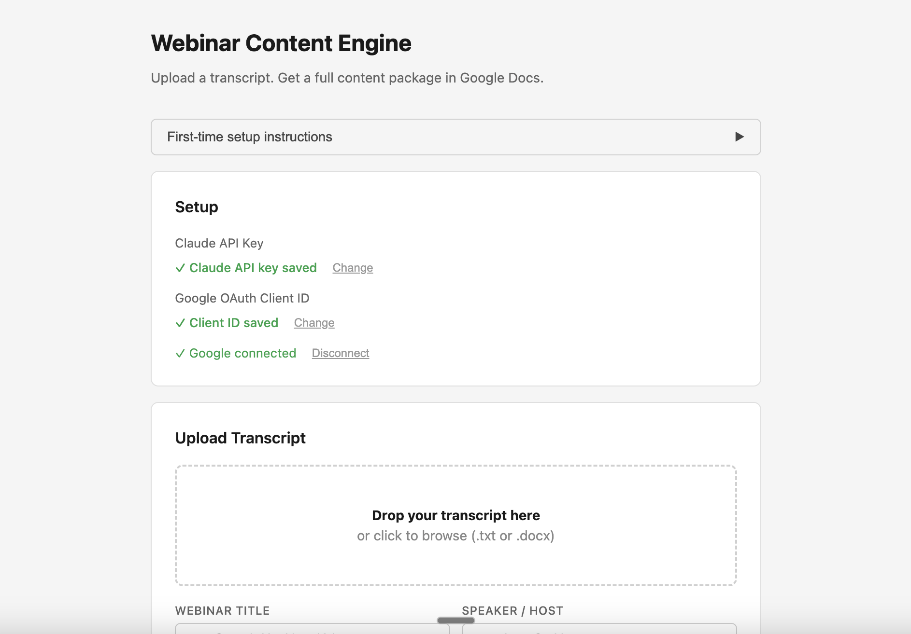

Turn a single webinar transcript into weeks of multi-channel content using Claude Cowork and Claude Code. Upload a raw transcript, connect your brand context docs, and generate LinkedIn posts, blog articles, newsletter recaps, email sequences, and short-form video scripts, all in your brand voice. Includes both a manual high-quality workflow and an automated tool you can build yourself in 2 to 3 hours.
Workflow Description
This workflow takes a raw, unedited webinar transcript and repurposes it into a full content package across multiple formats and channels. The system uses Claude's context doc folder to maintain brand voice consistency across every output.
There are two versions: a manual process where you work directly with Claude Cowork through multiple editing rounds (higher quality, used for client work), and an automated tool built in Claude Code that generates a Google Doc with all content types in one pass (faster, used as a starting point).
An hour-long webinar produces 8,000 to 12,000 words of original, conversational content. That is substantially more raw material than a blog outline or content brief, and it is inherently original because it came from a live discussion that nobody else can replicate.

Before You Begin
Tools you'll need open
- Claude Desktop App (Cowork or Code, not the browser version)
- Wispr or another voice transcription tool (optional but recommended)
- Riverside, Zoom, or any webinar platform that exports transcripts
- Google Docs (for the automated tool output)
What you'll need before starting
- A raw webinar transcript downloaded directly from your recording platform. Do not clean it up or edit it. Claude handles messy transcripts without issue.
- A context doc folder on your local machine containing: brand and writing guidelines, ICP documentation, previous content examples, presentation decks or sales materials with branding, product info and competitor positioning.
- A "don't do this" list for your AI writing. Ours bans em dashes, staccato sentences, passive voice where active works, and overused AI words like "shift," "gap," and "leap."
How It Works
The manual workflow follows four stages. Each stage feeds into the next and requires human judgment at every transition.
Transcript upload → Idea extraction → Draft generation → Multi-round editing → Final content package
The automated version compresses all of this into a single tool that accepts a transcript and outputs a Google Doc. The quality trade-off is real: the automated version gets you about 70% of the way there. The manual process, with a human editing each draft, gets you to publishable.

Build Instructions
Create a dedicated folder on your local machine for each client or brand. Add brand guidelines, ICP documentation, writing style examples, previous high-performing content, and any presentation decks with visual branding. Connect this folder to Claude Cowork or Code at the start of every content session.
Download the unedited transcript from Riverside, Zoom, or your webinar platform. Drop it directly into the Claude session. Do not clean it up. The messier the input, the more context Claude has to work with.
Ask Claude to outline the most engaging and insightful ideas from the transcript, taking into account the ICP and company info from the context docs. Use voice transcription (Wispr) instead of typing. When you speak, you naturally over-explain and give background context. That extra context produces dramatically better output than clean, trimmed typed prompts.
Ask Claude to write drafts for each content piece using the outline it produced. Specify: LinkedIn posts, blog articles, newsletter recap, email follow-up sequences, and short-form video scripts. Claude pulls from the context docs to match the brand voice automatically.
Read every draft. Identify every sentence that sounds like generic AI writing. Tell Claude exactly what is wrong: this opening line needs to work without context, this paragraph uses a banned sentence structure, this CTA points to the wrong page. For important posts, this process can take up to an hour per piece. That editing time is the entire value proposition.
Take one of your full manual content sessions and ask Claude to summarize your workflow. Then go into Claude Code and say "build me this." The tool took us 2 to 3 hours to build. We are not developers. The tool generates a Google Doc with all content types. Subscribe to our Substack to get the markdown file and build your own version.
Quality Checklist
Before publishing any content piece
- Does the opening line work without any additional context?
- Have you removed all banned sentence structures and overused AI words?
- Does the tone match the brand voice from your context docs?
- Is the CTA pointing to the correct page?
- Would you be comfortable if a client saw this as a first draft?
For the automated tool output
- Have you reviewed every piece before publishing? (Do not blindly publish AI output)
- Does the Google Doc contain all requested content types?
- Are the LinkedIn posts under the character limit?
- Do the email sequences have correct subject lines and personalization tokens?
For the context doc folder
- Is the writing style guide up to date with your latest "don't do this" list?
- Do you have at least 5 examples of high-performing content for the brand?
- Are the ICP docs specific enough (job titles, company sizes, pain points)?
Common Mistakes to Avoid
- Skipping the context docs. If you paste a transcript with zero context, you will get mediocre output. That is not the tool failing. That is you skipping the foundational work.
- Publishing first-draft AI output. If your agency delivers what Claude spits out on the first pass, your clients can do that themselves for $20/month. The human judgment layer is what they pay for.
- Typing prompts instead of speaking them. When you type, you self-edit and trim context. When you speak, you ramble, over-explain, and give background. All of that extra context makes the output dramatically better.
- Using vague instructions. "Optimize for engagement" and "make it good" mean nothing to an AI. Say exactly what you want: avoid staccato sentences, do not use the word "bank" because this is a finance startup, the CTA should drive to a demo page not a blog post.
- Following the same template every month. If you use the automated tool without adjusting for what made each webinar unique, every content batch will feel identical. Sit down and ask: what was special about this one?
- Sending follow-up content too late. If you send the post-webinar email a week after the event, it is over. People have already forgotten. This workflow exists to get content out within hours, not days.
Handling Special Situations
Highly regulated industries
If you work with finance, healthcare, or legal clients, your context docs need to include every compliance constraint. What words you cannot use, what claims require disclaimers, what needs legal review. Claude will follow these rules if they are clearly documented in the folder. We work with multiple finance startups where you literally cannot say the word "bank" in certain contexts.
New clients with no content history
Spend 2 to 3 hours upfront compiling brand docs, writing guidelines, and gathering examples of content that represents the voice you want. The first few batches will require heavier editing. By the third or fourth webinar, the context library is strong enough that first drafts are noticeably better.
Multiple ICPs attending the same webinar
Download the RSVP list before generating content. Ask Claude to segment attendees by role, industry, company size. If you identify 3 to 4 core ICPs, consider creating targeted email sequences and specific social posts for each segment. You can even turn these into paid ad creatives for each ICP.
When the webinar content is mediocre
Not every webinar produces great content. If the conversation was surface-level, you might only get 2 to 3 usable content pieces instead of 5 or more. That is fine. Do not force mediocre insights into more posts just to hit a content quota.
Claude vs ChatGPT for this workflow
We used ChatGPT exclusively through 2025 and switched to Claude in 2026. The biggest improvement: Claude maintains context from the docs folder throughout the entire chat. With ChatGPT, we would constantly re-remind it to reference the brand guidelines. By the end of a long content session, ChatGPT would drift from the brand voice. With Claude Cowork and Code pulling directly from local context docs, that drift does not happen.
Measuring Success
Content output per webinar
- 5+ LinkedIn posts (each with a unique angle from the transcript)
- 2 to 3 blog articles (long-form pieces based on specific topics covered)
- 1 newsletter recap
- 1 email follow-up sequence (3 to 5 emails)
- 2 to 3 short-form video script outlines
Time benchmarks
- Manual workflow (high quality): 3 to 4 hours per webinar for a full content package
- Automated tool (good baseline): 20 to 30 minutes to generate, plus 1 to 2 hours editing
- Before this workflow: 2 to 3 days for a content team to produce the same output
Quality indicators
- Content passes brand voice review without major rewrites
- Follow-up emails sent within 24 hours of the webinar (not a week later)
- LinkedIn posts generate engagement comparable to manually written posts
- Clients cannot tell which posts were AI-assisted vs. fully manual
The Prompts
Prompt 1: Idea extraction
Prompt 2: Draft generation
Prompt 3: Editing round
Expected Results
- A full multi-channel content package from a single webinar, produced in hours instead of days
- Content that maintains brand voice consistency because it pulls from your context doc library
- An automated tool you own and can customize, built in 2 to 3 hours with no coding knowledge
- A repeatable weekly workflow that scales across multiple clients
- Follow-up content published while the webinar is still fresh in attendees' minds
- Significantly reduced reliance on freelance writers for routine content repurposing
Want more like this?
One email per week. Recaps, prompts, and lessons from every live session.